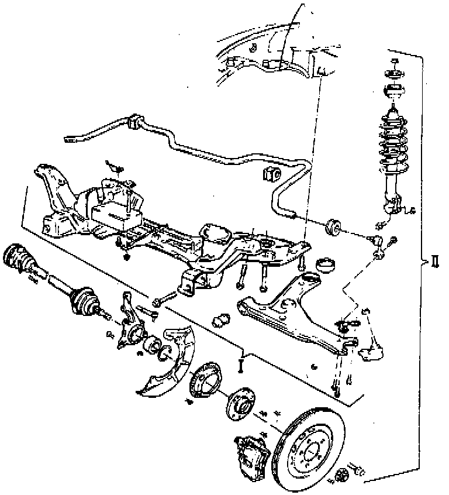

Suspension: Application and ID

Models with the V6 engines are equipped with "Plus" suspension.
The following "Plus" suspension components are different from the "Base" suspension:
- Control Arm
- Ball Joint
- Wheel Bearing Housing
- Stabilizer Bar And Link Rod
- Axle Shaft Brake Disc
- Wheel Hub
- Wheel Rim